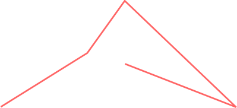
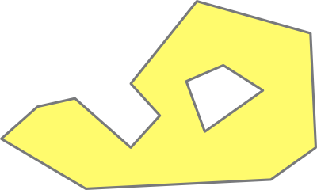
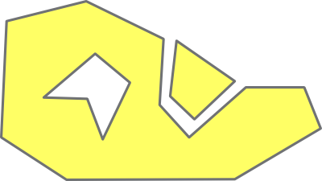

The Geometry Library contains geometry classes and algorithms, which
are separated from each other. This page describes the geometry
classes.
Geometry classes are templatized in many ways:
point coordinate values can be defined using numeric types as
double,
float or
int.
Linestrings can have points of the type above,
types derived from these point types or point types defined by the library user. Points are contained in containers of
type std::vector or another std:: container type.
OGC made standards on those geometries, and called them
simple
features.
The Geometry Library follows the OGC names for the naming of
the classes.
The Geometry Library defines the following OGC geometries:
point |
A point, having coordinates of type T Currently x() and y(), will be changed based on boost list discussions! |
linestring |
An ordered series of points of type
P. The linestring is default a std::vector of points, but can also
be a std::list or std::deque of points |
linear_ring |
An ordered and closed series of
points of type P. As with the linestring, it is default but not always
a std::vector |
polygon |
An outer ring and zero, one or more
inner
rings (holes).
|
multi_point |
A collection of points
|
multi_linestring |
A collection of linestrings (for
example: the output of the clipping of one linestring can result in a
multi_linestring)
|
multi_polygon |
A collection of polygons
|
The following geometry types are used in the Geometry Library, but not
defined by OGC:
circle |
A circle (consisting of a center
and a radius, used for selections (within) ) |
box |
A box (consisting of a minimum
point and a maximum point, used for selections and clipping) |
segment |
A line from point "first" to point
"second", used in some algorithms |
There is one traits class:
geometry_traits |
Defines the type used as
coordinates, and the type used for the points, with their names
coordinate_type
and point_type |
WILL BE CHANGED! THERE WILL BE MORE GENERIC POINT CONCEPT/BASECLASS and specializations for x/y and lat/lon or other
The point is defined like this:
template <typename
T>
class point
{
public :
typedef T
coordinate_type;
// rest omitted, will be changed
};
The point that is defined by the Geometry Library contains methods to
access and modify coordinates, which can be doubles, floats,
ints or another numeric type. Furthermore there are some constructors
available and there are some operators to compare points. Basically
that's everything there is.
However, that doesn't mean that other points are not possible. A user can
derive points from this point to add for example an SRID
(spatial reference ID), a property map, or anything
else. Or a user can implement point class with, for
example, latitude and longitude. Those classes are accepted by the
algorithms which are in the library, as long as they support
the methods above. In fact they don't need to support them
all: if only algorithms are used which access coordinate values, such
as
within,
then the two methods which modify coordinate values are not necessary.
If there are no algorithms used which sort the points, they don't have
to be defined. The compiler will tell if the class fits the algorithm.
The usage of points is trivial:
geometry::point<double>
p1;
geometry::point<double>
p2(3.14, 8.2);
geometry::point<char>
p3(5, 8);
// will be changed!
geometry::point<double>::coordinate_type
x = p1.x();
The geometry traits class is a small class defining two member
types. All geometry classes, but point, are derived from the geometry
traits class.
template <typename P>
class geometry_traits
{
public :
typedef P point_type;
typedef typename
P::coordinate_type coordinate_type;
};
A linestring is an ordered series of points. Here is an example of a
linestring with 5 points.

You might expect a
shorter name
line
here, but the name
linestring
is defined by OGC and the Geometry Library follows this definition.
The Geometry Library defines a linestring, by design, as small as
possible, it is a container of points and for the rest an empty class:
template <typename P, template
<typename,typename> class V = std::vector,
template<typename> class A = std::allocator>
class linestring : public V<P,
A<P> >, public geometry_traits<P>
{
};
The definition might seem somewhat cryptic, therefore it can be seen as this definition, its default:
template <typename P>
class linestring : public
std::vector<P>
{
};
It is just a vector or another container of points, and
contains the two member types point_type
and coordinate_type
defined by the geometry traits class.
A linestring can be used like this:
geometry::linestring<geometry::point<double>
> ls;
ls.push_back(geometry::point<double>(1.2,
5.8));
Because a linestring is a container, you can call the
std:: algorithms on containers.
In most cases you will first do a typedef of the point type
you want to use:
typedef
MyPoint<double> P;
geometry::linestring<P> ls;
If you prefer other container types you can use a linestring like this:
geometry::linestring<P,
std::deque> ls1;
geometry::linestring<P,
std::list> ls2;
A polygon contains an outer ring and zero, one or more inner rings.
Inner
rings are, in general, also called holes, donuts, or interior
of in the polygon. The outer
ring
is the exterior boundary. The example below shows a polygon with one
inner ring.

Rings in polygons are normally directed:
the outer ring is clockwise, the inner rings are counterclockwise.
Some algorithms depend on this order and there is an algorithm to
ensure that a polygon has the right order.
The interface is the following:
template <typename P, template <typename,typename>
class V = std::vector, template<typename> class A =
std::allocator>
class polygon : public
geometry_traits<P>
{
public :
// Member types
typedef linear_ring<P, V,
A> ring_type;
typedef V<ring_type ,
A<ring_type > > inner_container_type;
const ring_type& outer() const;
const inner_container_type &
inners() const;
ring_type& outer();
inner_container_type & inners();
void clear();
};
A polygon can be used like this:
geometry::polygon<geometry::point<double>
>
polygon;
polygon.outer().push_back(geometry::point<double>(1.2,
5.8));
A multi point is a set of points, for example a constellation. As a
linestring, it is empty.
template <typename P, template <typename,typename>
class V = std::vector, template<typename> class A =
std::allocator>
class multi_point : public V<P,
A<P> >, public geometry_traits<P>
{
};
However, it is not the same as a linestring: you can not calculate the length, for example.
A multi linestring is a set of linestrings, for example a road.
template <typename L, template <typename,typename>
class V = std::vector, template<typename> class A =
std::allocator>
class multi_linestring : public
V<L, A<L> >, public
geometry_traits<typename L::point_type>
{
public:
typedef L linestring_type;
};
A multi polygons is a set of polygons, for example the state Hawaii.
This is a multi polygon, containing two polygons:

A multi polygon is defined as follows:
template <typename Y, template <typename,typename>
class V = std::vector, template<typename> class A =
std::allocator>
class multi_polygon : public V<Y,
A<Y> >, public geometry_traits<typename
Y::point_type>
{
public :
typedef Y polygon_type;
};
A box is not defined as such by OGC but useful in many algorithms. The
Geometry Library defines a box by a minimum point and a maximum point.
template <typename P>
class box : public
geometry_traits<P>
{
box();
box(const P& min,
const P& max)
//
Constructor with an option, for example geometry::init_inverse
box(init option);
const P& min() const;
const P& max() const;
P& min();
P& max();
};
The main purpose of a circle is to be able to select, for example,
points or lines with a circle. There is no full support on circle in
most algorithms, you cannot intersect polygons with circles for example.
A circle consists a point and a radius.
template <typename P, typename T>
class circle :
geometry_traits<P>
{
public :
typedef T radius_type;
circle();
circle(const P&
center, const T& radius);
circle(const
coordinate_type& x, const coordinate_type& y, const
T& radius);
const P& center()
const;
const T radius() const;
void radius(const T&
r);
P& center();
};